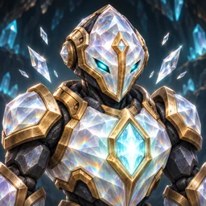
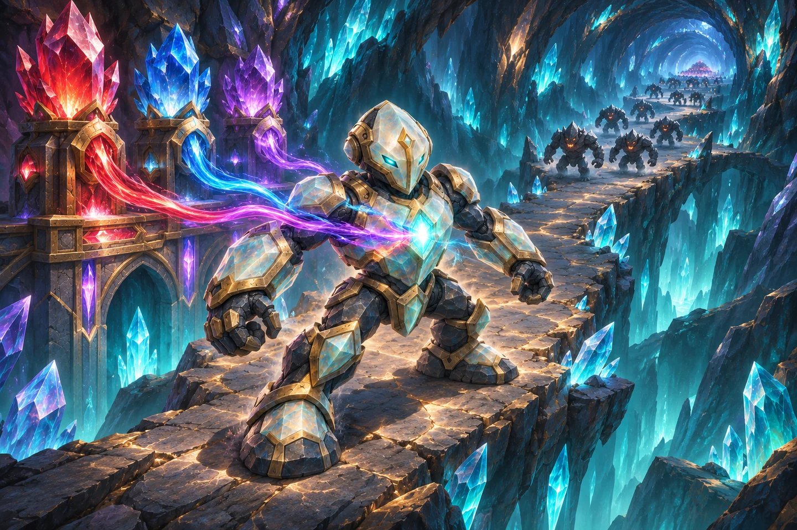
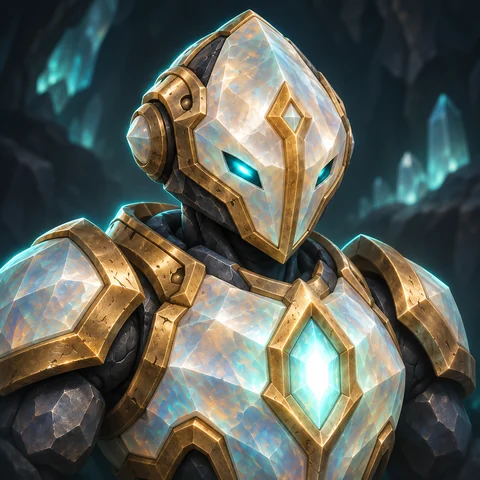
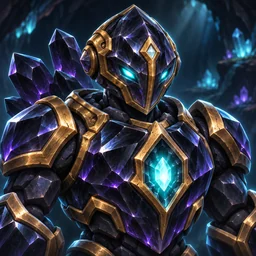
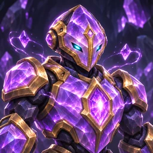
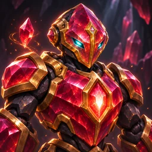
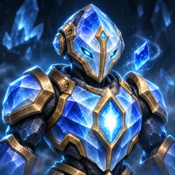
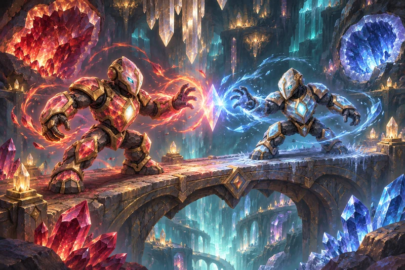
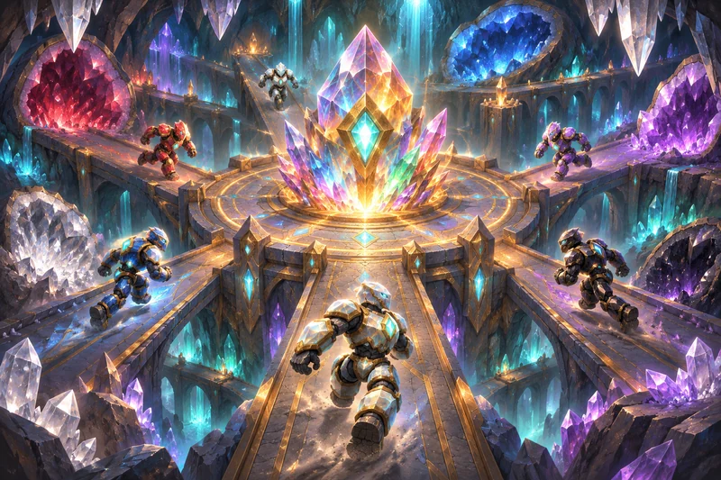

Physical · precision
Diamond
Piercing crystal darts become a permanent blade orbit when paired. Diamond conduits also reveal nearby stealth enemies.

Race spotlight · development preview · 2 November 2026
A living crystal core. A network of conduits. An army whose spells change with the formation you build.
Explore the five familiesSee the combinationsPrismari world and character illustrations. Gameplay refinements shown here are in review.
The heart of your formation
The Resonant Core is a compact crystal-and-stone seed-golem. It casts the spells; the conduits around it supply the power and determine how it fights.
Place a conduit directly above, below, left or right of a core to connect it. Diagonal neighbours do not link. A conduit can power several adjacent cores, giving its full power to each of them.

Five crystal families
Upgrade conduits from T1 through T4 to increase their power. Mix families to find a spell that suits your lane, or double a family to unlock a different attack pattern.

Physical · precision
Piercing crystal darts become a permanent blade orbit when paired. Diamond conduits also reveal nearby stealth enemies.

Physical · impact
Marked geode strikes, stone eruptions and knock-ups hold enemies in place. Add Obsidian to reshape a spell into heavier attacks.

Magic · lightning
Rapid needles build shared Exposure. Duplicate Amethyst creates a lightning circuit that links nearby enemies.

Magic · fire
Build Cinder Seeds, detonate ember traps and leave burning ground. Fire hits apply Scorched for lingering damage.

Magic · frost
Build Chill to slow enemies, freeze them and trigger a shatter. Repeated Sapphire creates a sweeping cone of frost mist.
Empowered-core portrait artwork. Physical and magical damage each respect the target's corresponding defences.
New formation. New spell.
Diamond + Diamond
A permanent blade ring strikes every ground enemy inside it. Add Amethyst for a faster orbit, or Obsidian for tremors around each victim.
Obsidian + Ruby
A slow fireball bursts on impact and leaves burning ground. Shape your maze to keep enemies passing through the flames.
Sapphire + Sapphire
A breath of frost mist builds Chill across the wave. Enough Chill freezes enemies before a damaging shatter.
Ruby + Sapphire
Fire seeks Chilled enemies. Frost seeks Scorched enemies. Both shots exploit the opposite debuff for bonus damage.
Different cores can complement each other. Arc Needles share Exposure on a target; frost spells build shared Chill, while Obsidian hits can detonate Cinder Seeds early. Position the right spells along the same route.
A world beneath the surface
Vast tunnels, hanging quartz and deep geodes define the Prismari world. New Duel, King of the Hill and Survival illustrations carry that theme into the mode cards. Eleven avatar choices include the neutral core, five empowered cores and five conduits.


Mode-card and avatar illustrations, not screenshots of a match.
Prismari in TEST
Prismari is part of the TEST game. This spotlight previews the artwork and spell refinements being prepared for the next update; use the matching build offered by the launcher. Balance and presentation continue to evolve during testing.
Get the TEST launcherBrowse all updates